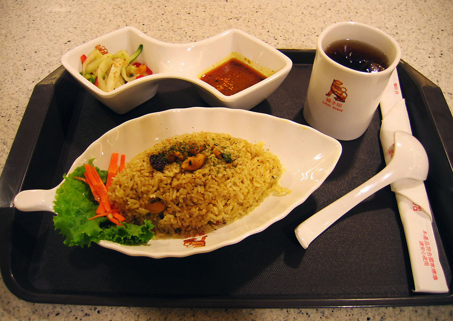

valgis
valgis - Vikižodynas

valgis
Puslapis iš Vikižodyno, laisvojo žodyno. Jump to navigation Jump to searchTurinys
1 Lietuvių kalba 1.1 Daiktavardis 1.1.1 Sinonimai 1.1.2 VertimaiLietuvių kalba [ taisyti ]
Daiktavardis [ taisyti ]
valgis ( dkt. , vyr. g. , pagr. f. , vns. vard. ) Daiktavardis Pagrindinė forma : valgis vienaskaita daugiskaita vard. valgis valgiai kilm. valgio valgių naud. valgiui valgiams gal. valgį valgius įnag. valgiu valgiais viet. valgyje valgiuose šauksm. valgi valgiai Skiemenys : val-gis valgis ( Maistas ) - valgomas dalykas , patiekalas valgymas
Sinonimai [ taisyti ]
valgis : ( Maistas ) duotė (lt) ( mot. g. ) maistas (lt) ( vyr. g. ) patiekalas (lt) ( vyr. g. ) valgis (lt) ( vyr. g. ) valgymas (lt) ( vyr. g. )Vertimai [ taisyti ]
? • p • a • r valgis : ( Maistas ) Anglų kalba : dish (en) , food (en) , meal (en) , chow (en) , nosh (en) , repast (en) , tucker (en) Arabų kalba : وجبة (ar) ( mot. g. ) (wájba) berberų kalba : ⵜⵉⵔⴻⵎⵜ (ber) ( mot. g. ) (tiremt) Bretonų kalba : pred (br) ( vyr. g. ), predoù ( dgs. ) Bulgarų kalba : ядене (bg) ( bev. g. ) (jadene) Čekų kalba : jídlo (cs) ( bev. g. ) Danų kalba : måltid (da) Esperanto : manĝaĵo (eo) Estų kalba : nurodykite žodžio valgis vertimą(-us) (Estų kalba), žr. Graikų kalba : γεύμα (el) ( bev. g. ) (yévma), φαγητό (el) ( bev. g. ) (fayitó) Kartvelų kalba : საჭმელი (ka) (sač‘meli), ჭამა (ka) (č‘ama) Hebrajų kalba : ארוחה (he) ( mot. g. ) Hindi : भोजन (hi) (bhojan) Interlingua : repasto (ia) Islandų kalba : máltíð (is) ( mot. g. ) Ispanų kalba : comida (es) ( mot. g. ) Italų kalba : pasto (it) ( vyr. g. ) Japonų kalba : 食事 (ja) (shokují), しょくじ (ja) (shokují) Jidiš : מאָלצײַט (yi) ( vyr. g. ) (moltsayt) Katalonų kalba : àpat (ca) ( vyr. g. ) Kinų kalba : 飯 (zh) (fàn) Korėjiečių kalba : 끼니 (ko) (kkini), 밥 (ko) (bap), 식사 (ko) (siksa), 食事 (ko) (siksa) Kroatų kalba : obrok (hr) ( vyr. g. ) Krymo totorių kalba : aşaytlıq (crh) , aş (crh) Latvių kalba : ēdienreize (lv) ( mot. g. ), ēdiens (lv) ( mot. g. ) Lenkų kalba : posiłek (pl) ( vyr. g. ) Malajų kalba : hidangan (ms) Marathų kalba : भोजन (mr) (bhojan), जेवण (mr) (jévann) Norvegų kalba : måltid (no) Nyderlandų kalba : maaltijd (nl) Portugalų kalba : refeição (pt) ( mot. g. ) Prancūzų kalba : repas (fr) ( vyr. g. ) Rumunų kalba : masā (ro) ( mot. g. ) Rusų kalba : еда (ru) ( mot. g. ) (jedá), пища (ru) ( mot. g. ) (píshcha), снедь (ru) ( mot. g. ) (snjed’) Sanskritas : भोजन (sa) (bhojan) Senoji anglų kalba : mǣl (ang) ( bev. g. ) Old Norse : mál ( bev. g. ) Serbų kalba : оброк (sr) ( vyr. g. ) , obrok (sr) ( vyr. g. ) Suomių kalba : ateria (fi) Škotų gėlų kalba : biadh (gd) ( vyr. g. ) Švedų kalba : måltid (sv) ( bendr. g. ) Tajų kalba : อาหาร (th) (aahăan), เสวย (th) (sàwŏie) Turkų kalba : yemek (tr) Ukrainiečių kalba : їжа (uk) ( mot. g. ) (jízha), страва (uk) ( mot. g. ) (stráva) Vengrų kalba : étkezés (hu) Vietnamiečių kalba : bữa (vi) , bữa cơm (vi) Vokiečių kalba : Mahl (de) ( bev. g. )
Naršymo meniu
Asmeniniai įrankiai
Neprisijungęs Aptarimas Indėlis Sukurti paskyrą PrisijungtiVardų sritys
Straipsnis AptarimasVariantai
Peržiūros
Skaityti Keisti IstorijaMore
Paieška
Naršymas
Pagrindinis puslapis Bendruomenė Naujausi keitimai Naujienos Atsitiktinis straipsnis Pagalba ParamaĮrankiai
Susiję straipsniai Susiję keitimai Įkelti failą Specialieji puslapiai Nuolatinė nuoroda Puslapio informacija Cituoti šį puslapįPrisidėkite
Reikalingi žodžiai Geidžiamiausi puslapiai Išverskite Patikrinkite Patikrinkite vertimą Nurodykite tarimąSąrašai
Pradžia Kalbų sąrašas Kalbų kodų lentelėSpausdinti/eksportuoti
Kurti knygą Parsisiųsti kaip PDF Versija spausdinimuiKitomis kalbomis
ᏣᎳᎩ English Magyar Polski Šis puslapis paskutinį kartą keistas 10 gegužės 2017 19:01. Turinys pateikiamas pagal Creative Commons Attribution-ShareAlike licenciją ; gali būti taikomos papildomos sąlygos. Norėdami sužinoti daugiau, žiūrėkite Naudojimo sąlygas . Privatumo politika Apie Vikižodyną Jokių Garantijų Mobili peržiūra Kūrėjai Statistika Slapukų politikaPosted by Jack  Read more
Read more  Comments (15)
Comments (15)  2020.10.27 08:01
2020.10.27 08:01